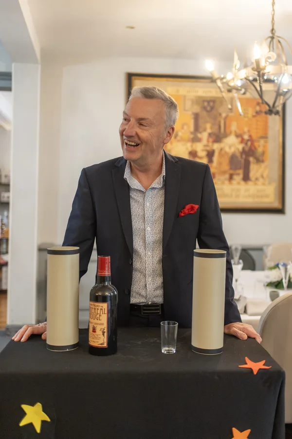
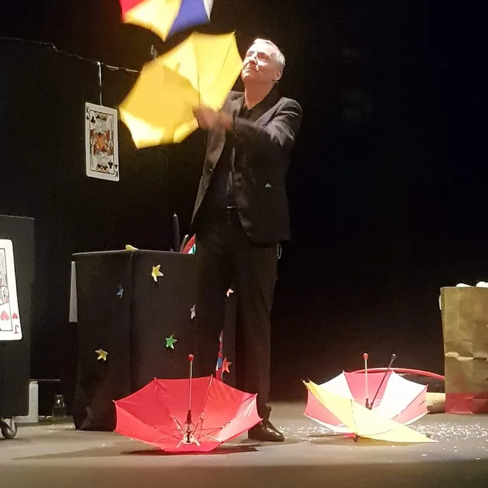
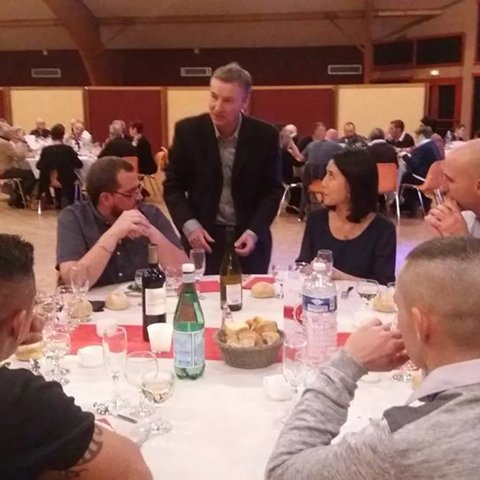
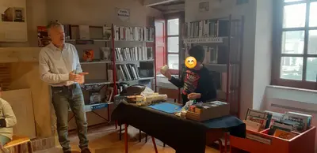

Une passion née devant la télévision

« Petit, j'adorais suivre les tours de Garcimore et de Gérard Magax, à la télévision. »
— Francis Darcy, La Nouvelle République, mars 2019
Longtemps spectateur, Francis passe à la pratique après la rencontre d'un autre passionné. Sa spécialité : la magie de proximité et les tours de cartes, toujours habillés d'une petite histoire et d'humour. Derrière chaque carte qui se lève, des heures de répétition devant le miroir.
Sous le nom de Côté Magie, il se produit aujourd'hui partout où l'on fait la fête : salles des fêtes, mariages, arbres de Noël, maisons de retraite, écoles, médiathèques et soirées d'entreprise.
Sa façon de faire de la magie
« La magie, c'est avant tout du plaisir partagé. »
— Francis Darcy
- Le close-up : la magie au milieu des invités, de table en table
- Le spectacle pour enfants, où chacun peut monter sur scène
- Les ateliers : Francis aime aussi transmettre, et apprend ses premiers tours aux enfants
- La magie pour les aînés, en EHPAD et clubs seniors
- La sculpture sur ballons, pour que chaque enfant reparte avec sa création
Ils en parlent
- « La magie de Noël a enchanté l'espace Bernard Boussard à Dun-sur-Auron » — Le Berry Républicain, décembre 2025 : « Les rires des enfants ont rempli la salle, captivés par les tours époustouflants du magicien Francis Darcy, originaire d'Issoudun. »
- « L'art de la magie selon Francis Darcy » — La Nouvelle République, mars 2019
- « Vidéo. Issoudun : la magie de Francis Darcy » — La Nouvelle République, mars 2019
- « On a vidé nos greniers » — Le Berry Républicain, mai 2014 : « Francis Darcy, le magicien venu en voisin d'Issoudun, faisait le bonheur des enfants qui furent subjugués par ses tours de passe-passe. »
Ils lui ont fait confiance
Francis Darcy a animé des événements pour Safran, la RATP, Carrefour, La Poste, la CPAM, Zodiac Aerospace, E.Leclerc, Kiabi, la Ville d'Issoudun et la Ville de Déols, parmi d'autres entreprises et collectivités. Ses clients lui attribuent 5 étoiles sur Google.
En scène et en proximité
Cliquez sur une photo pour l'agrandir.




Envie de magie pour votre événement ?
Parlez-en à Francis : il vous répond personnellement et établit un devis gratuit sous 24 heures.
Issoudun · Indre · Cher · Centre-Val de Loire